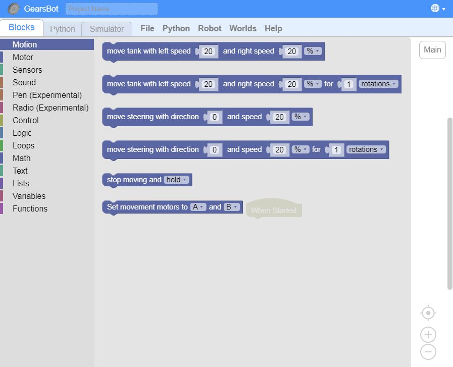
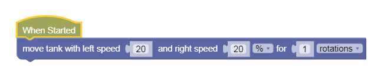
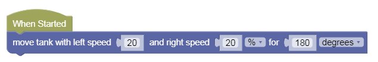

Sequences
Blocks Tab
Navigate to the Blocks tab. Notice the categories of code blocks on the left-hand side.
Whenever you click on any of those categories, a panel of relevant code blocks is shown.
You can drag and drop blocks from those panels into the coding canvas.
When Started
The main program will start executing code from the When Started event. When you press the Run button in the simulator, this is where the robot code begins.

Statements
The fundamental unit of a code is an execution statement.
Do this.
Do that.
When we program a bunch of these statements one after the other, the hub will execute them in the same order.
This is called a sequence, meaning one statement follows another.
Sequences
Let's try some simple code sequences.
First, let's make the robot move forward.
Robot Movement
We already covered how to make the robot move in various ways using a differential 2-wheel drive, so let's get straight to coding.
Find the Motion tab, the first one, and look at the various choices... It may seem daunting.

We will only use the 2nd block - Move tank For ___
We will discuss all the other blocks in due time, but for now it should suffice to use this one block.
Forward
Let's make the robot move 1 block forward.
Drag a Move Tank (2nd block) into When Started:

Now go back out to Simulation tab and click Run.
Your robot should move forward.
How far is it moving forward?
However far 1 rotation of the wheels gets you - which is the circumference of the wheel. The bigger the wheel the further you'd go...
Also, 1 Rotation = 360 degrees.
If you want to go less than 1 rotation, change the distance unit to degrees. For instance, to go half as far, use 180 degrees.
If you know your fractions and decimals, 180 degree is 0.5, or half of a full rotation.

Challenges:
-
Change the speeds to go slower or faster, but remember to keep them the same speeds on both sides to go forward
-
Make your robot go backward. What numbers do you think would make your robot reverse? (yes, negatives!)
-
Try to write a simple program that make the robot go back and forth, back and forth over and over!
Turn Left
If you remember, doing a Left turn required us to either:
-
only move the right wheel, or
-
make the right wheel go fwd, and the left wheel go back.

Use the same Move Tank block to try and make a perfect left turn.
You'll need to decide on which wheel to move fwd/back or keep off, and you will need to do some trial and error on the number of rotations.
NEXT!
Let's use what we've learned to complete some paintings!